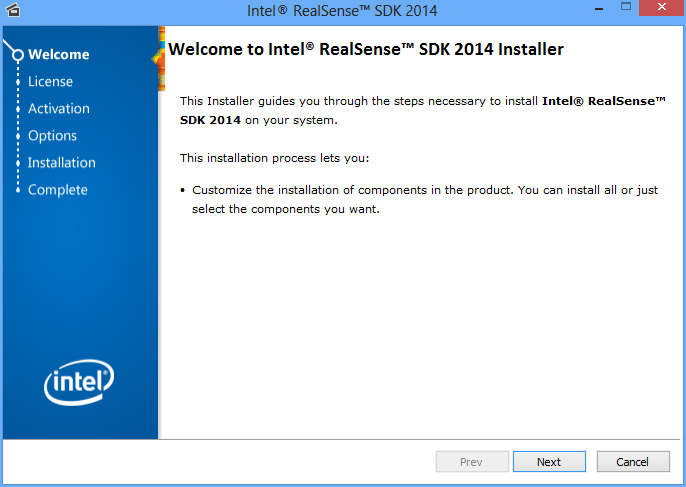

To install the SDK software, complete the following steps:
| 1. | Download and run the SDK installer from http://www.intel.com/software/perceptual. |
| 2. | You will see a welcome screen as illustrated in Figure 1. Follow the installer instructions to complete the installation process. |
 By default, the SDK installs to the C:/Program Files (x86)/Intel/RSSDK directory.
By default, the SDK installs to the C:/Program Files (x86)/Intel/RSSDK directory.
 If the SDK installer detects any existing SDK versions, the SDK installer will prompt you for an upgrade. It is recommended to always do a clean uninstall and then install any newer SDK versions.
If the SDK installer detects any existing SDK versions, the SDK installer will prompt you for an upgrade. It is recommended to always do a clean uninstall and then install any newer SDK versions.

Figure 1: Installer Welcome Screen
| 3. | After installation, reboot the system when prompted. This step is critical to propagate all environmental variables. |